Savska anketa
Pregled ankete prebivalcev
16. 11. 2026 ob 7.39 (Europe/Ljubljana) · N = 545Pregled ankete prebivalcev
16. 11. 2026 ob 7.39 (Europe/Ljubljana) · N = 545| Starost | % (n = 538) |
|---|---|
| 35–49 | 43 % |
| 50–64 | 26 % |
| 25–34 | 14 % |
| 65–74 | 8 % |
| 15–24 | 7 % |
| 75 ali več | 3 % |
Stanovalci Savskega naselja najpogosteje pohvalijo bližino središča (79 %), zelenje in drevesa (76 %), trgovine in storitve (51 %) ter igrišča (45 %). Hkrati parkiranje in promet zasedata vrh nujnih težav.
»Polna igrišča, prijetni sosedje, veliko zelenih površin.«
»Otroci se lahko igrajo zunaj in podijo po naselju. Občutek varnosti. Možnost peš ali s kolesom po opravkih in v center. Zelenje, drevesa. Igrišča.«
| Kje je največ težav v naselju | število | % od 545 |
|---|---|---|
| Parkiranje | 409 | 75 % |
| Promet skozi naselje | 319 | 59 % |
| Igle in droge, varnost | 200 | 37 % |
| Več klopi | 182 | 33 % |
| Čistoča in pasji iztrebki | 159 | 29 % |
| Drevesa in zelenice | 121 | 22 % |
| Dom skupnosti | 111 | 20 % |
| Boljši zrak | 110 | 20 % |
| Koledar dogodkov | 101 | 19 % |
| Igrišča in mladi | 99 | 18 % |
| Hrup | 85 | 16 % |
| Brez dvigala | 78 | 14 % |
| drugo | 20 | 4 % |

Med nujnimi 75 % (409/545). Skoraj vsak dan prizadene 71 % (285/403). Težave (n = 468): pogosto 51 %, včasih 30 %.
»Vsekakor stanje mirujočega prometa. Žalostno je, da se vse to razkošje zelenih urbanih prostorov utaplja v avtomobilski pločevini, ne le stanujočih v naselju, pač pa obiskovalcev mesta«
»Glavni problem je parkiranje, saj na račun avtomobilov izgubljamo prostor, ki je namenjen nam, prebivalcem.«
Druga tema (59 %). Skoraj vsak dan 75 % (237/318). Novo ureditev 63 % oceni slabo ali katastrofalno (302/482). Enosmerne: da 50 %, ne 35 %, ne vem 16 % (n = 535). Dnevni prevoz: avto 36 %, kolo 32 %, peš 20 %, JPP 10 % (n = 483).
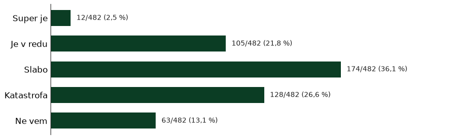
»Več ležečih policajev v okolici šole in vrtca, saj omejitev 30 skozi naselje ne zaleže.«
»Na eni od ulic v naselju bi dodal še en ležeči policaj na drugem prehodu (pri vhodu na parkirišče za bencinska črpalka). V enem letu bi me že vsaj 3x povozili, ker vsi divjajo. Videl sem tudi nesrečo, ko je nekdo zbil otroški voziček. Na srečo je takrat otrok hodil zraven mame in ni bil v njem.«
»Promet, od ureditve krozisca pri eni od ulic v naselju je slabse, ker so speljali promet po vmesni cesti se zastopa celo krozisce. Ko bo zraslo se 1000 novih stanovanj bo pa tukaj resen problem.«
Pogrešajo pošto (79 %) in banko (59 %) (n = 435).
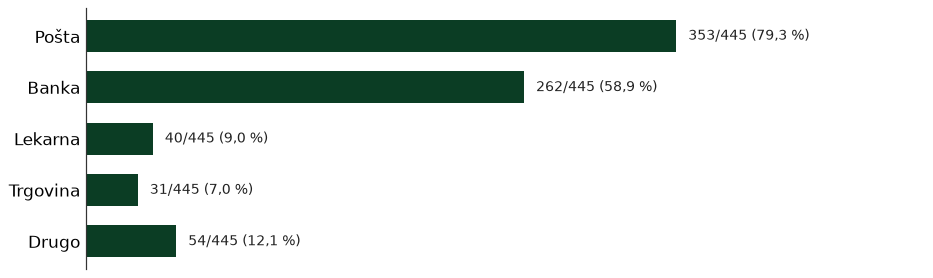
»ni več pošte, banke, izginja ta mikrosistem, ki je delal savsko naselje poseben«
»Slabo je, ker so vzeli pošto in bankomat ter banko. vsaj bankomat in pošta bi morala ostati, ogromno starih ljudi sploh ne zmore do pošte in gotovine.«
Med nujnimi 37 % (200/545). Skoraj vsak dan 28 %, nekajkrat na mesec 32 % (n = 200).
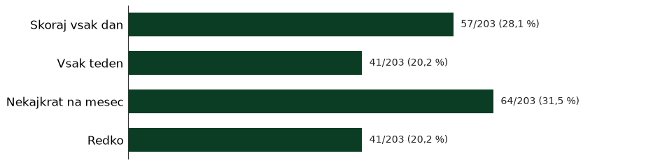
»Kjer so klopi malo bolj skrite, je okoli njih polno odpadkov, tudi takih, ki so nevarni (igle…).«
»Treba je odpraviti tudi to, da se narkomani pikajo v avtomobilu, 10 m od igrišča polnega otrok. Treba je izboljšati tudi čistočo, ker so se nam zaredile podgane, smeti so povsod.«
Prav tako 33 % (182/545).
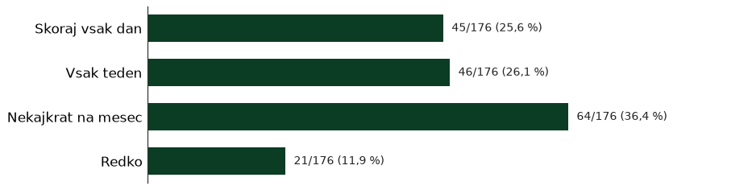
»Več skupnih zunanjih prostorov, klopi z mizami.«
»Več klopi za druženje na prostem.«
Med nujnimi 29 %. Čistilne akcije podpira ≥1×/leto 89 % (n = 533).
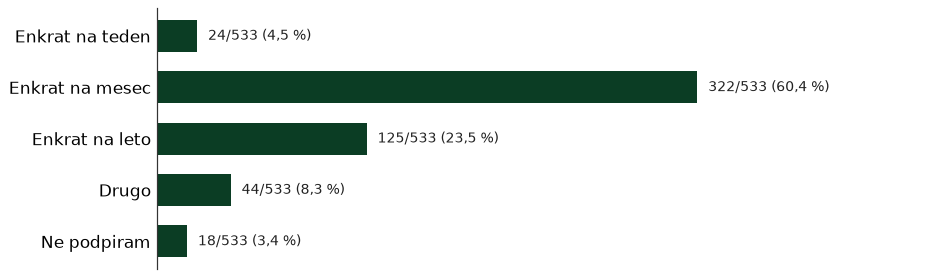
»Čistoča je na nuli!«
»Premalo košev za odpadke, zabojniki za smeti ob cesti, zraven pa individualni kosovni odpad.«
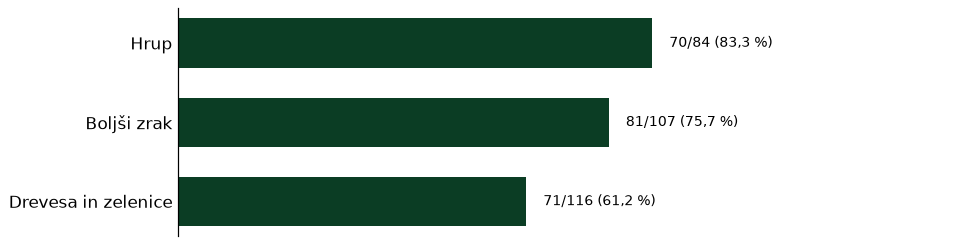
»Ceste okrog naselja so obupne glede pregostega prometa, hrupa ki ga ustvarjajo in slabega zraka. Drevesa niso obrezana in negovana že desetletja.«
»Še naprej negovali in sadili drevesa in prenehali z izgradnjo stolpnic, da se zmanjša hrup za prebivalce.«
»Preveč se sliši ropotanje vlakovnih kompozicij. Naj dajo protihrupno ograjo, da se zmanjša hrup.«
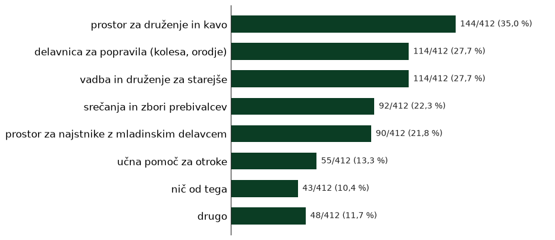
»Pogrešam, da bi imeli enkrat na mesec kak dan soseda: en mesec soseski bolšji sejem, drugi kino med bloki, tretji predavanja ali delavnice pod krošnjami. Da bi imeli več brezplačnih vodenih vadb v tej dvorani zraven doma skupnosti. Da bi bila knjižnica reči večja in imela dovolj velik prostor za delavnice.«
»Težavo vidim, da nimamo svojega doma krajevne skupnosti, kjer bi se družili in imeli občutek, da smo skupnost. Morali bi organizirati vsaj enkrat letno velik dogodek za Savsko in o tem obvestiti vse prebivalce. Naj to postane tradicija, s koledarjem dogodkov.«
Igrišča/mladi 18 %. Pot v šolo/vrtec: nevarna 14 %, ne preveč varna 38 %, kar varna 40 % (n = 152).
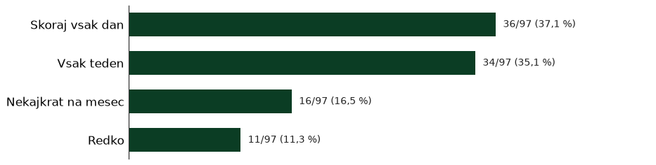
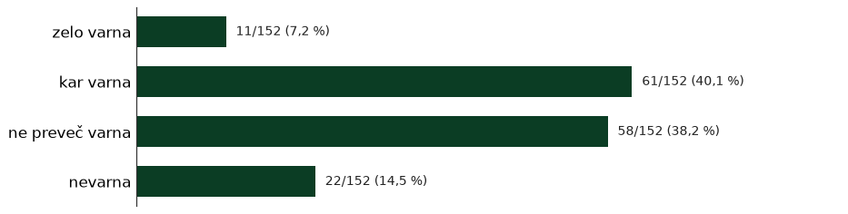
»Da bi bila igrišča bolj urejena oziroma prenovljena.«
»Kakšen prostor za mlade bi bil potreben.«
»Čeprav so moji otroci že zrasli, se mi zdi nesprejemljivo, da je šolsko igrišče zaprto v popoldanskem času. Če jih skrbi vandalizem, bi lahko organizirali zaklepanje po 20. uri.«
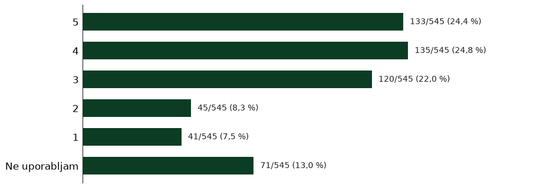


»Boljša bus povezava (direktna) do UKC.«
»trenutno imam na razpolago dokaj ugoden dostop do vsega, kar potrebujem, a verjamem, da če bi bil v tretjem življenjskem obdobju, bi pogrešal javno primarno zdravstveno dejavnost.«
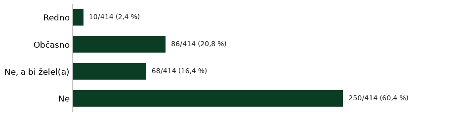
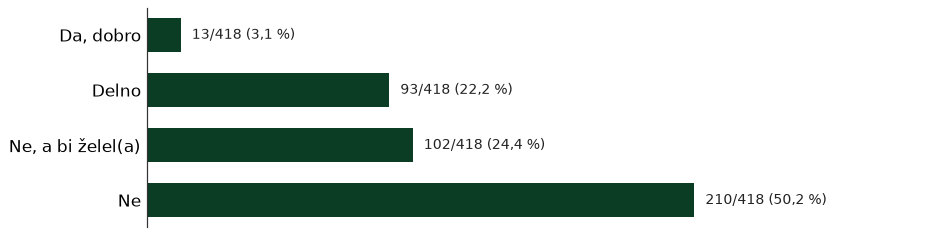
Presek: 16. 11. 2026 ob 7.39 (Europe/Ljubljana) · N = 545
Kontakt za anketo: savskonaselje1@gmail.com · 070 205 595 · savska.org